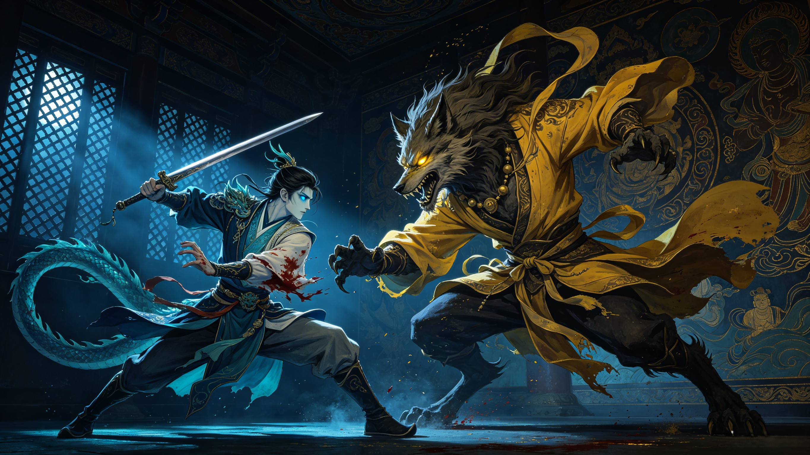

The Battles
He was a horse for fourteen years. But when the demon turned Tang Sanzang into a tiger and the other pilgrims were scattered — Ao Lie transformed back into a man, crept into the demon's palace, and fought. The White Dragon Horse's hidden battles, revealed.
When Tang Sanzang and Sun Wukong first reached Serpent Coil Mountain, they stopped to rest by Eagle Grief Stream. Without warning, a white dragon burst from the water — jaws wide — and swallowed Tang Sanzang's horse in a single bite. The monk, terrified, could only watch as the beast vanished back into the depths.
Sun Wukong, enraged by the loss of their only means of transport, dove into the stream to hunt the "demon." What followed was a vicious underwater battle between two of the most powerful beings in the cosmos. Wukong wielded his Ruyi Jingu Bang — the eight-ton iron pillar that could change size at will. Ao Lie fought in his true dragon form — coiling through the water, striking with fangs and claws. The stream churned white. Waves crashed against the banks. Neither could decisively defeat the other.
The battle was ultimately inconclusive — Ao Lie, recognizing Wukong's strength and still uncertain of his own purpose, retreated to the bottom of the stream and refused to emerge. It took Guanyin's direct intervention to end the stalemate. She revealed to Wukong the truth: the "demon" was no demon at all. He was the monk's future mount, placed here by heaven itself. The battle that began in fury ended in revelation — and the dragon who fought the Monkey King to a standstill became his fellow pilgrim.
Before Guanyin arrived to resolve the situation, Wukong called for reinforcements. Zhu Bajie — the newly recruited second disciple who had once been Marshal Canopy of the Heavenly River — dove into Eagle Grief Stream. As a former admiral of the celestial navy, Bajie was one of the most accomplished underwater combatants in existence. Together, he and Wukong attacked Ao Lie from two directions — the Monkey King above, the Marshal below.
Even against two opponents of such caliber, Ao Lie held his ground. The dragon's mastery of the aquatic environment gave him an advantage neither of his attackers could match. Wukong — whose powers were diminished underwater — was forced to fight defensively. Bajie — who knew these waters as well as any creature alive — recognized the dragon's royal lineage in the way he moved. The battle ended only when Guanyin descended from the clouds and commanded all three to stand down.
Significance: The White Dragon Horse is one of the very few beings in Journey to the West who has fought both Sun Wukong and Zhu Bajie simultaneously — and survived. Though brief, this battle establishes that Ao Lie was never a helpless creature. His power, submerged literally and metaphorically, was always there.
This is the White Dragon Horse's defining battle — the one time in all 100 chapters of Journey to the West that he assumes human form to fight. It occurs in Chapter 30, at the Precious Image Kingdom.
The Yellow Robe Demon, a celestial wolf who had descended to the mortal realm, had abducted the Princess of the Precious Image Kingdom. Tang Sanzang — attempting to deliver a message to the king — was magically transformed into a tiger by the demon's sorcery. The real Tang Sanzang was now a beast, locked in a cage, while the pilgrims were scattered. Sun Wukong had been exiled by Tang Sanzang's own order. Zhu Bajie had fled. Sha Wujing had been captured.
For the first time since his transformation at Eagle Grief Stream, Ao Lie shed his equine form. He became a man — tall, pale-skinned, with the bearing of a prince and eyes that still held the depth of the ocean. He crept into the demon's palace under cover of darkness, disguised as a palace attendant. His plan was audacious: to assassinate the Yellow Robe Demon in his own throne room.
The attempt failed. Ao Lie was not a trained assassin — he was a dragon prince, and his strike was detected. The Yellow Robe Demon, enraged by the boldness of the attack, transformed into his true monstrous form and counterattacked. What followed was a desperate one-on-one duel — Ao Lie, armed with nothing but a stolen sword, against a celestial demon with centuries of combat experience.
Ao Lie was wounded. The demon's claws tore into him, and he was forced to retreat back to the stables, where he resumed his horse form — bleeding, exhausted, but alive. When Zhu Bajie returned and saw the horse's wounds, he understood what had happened: the quiet one had fought alone. Ao Lie's courage — his willingness to fight, to bleed, to nearly die for a master who didn't even know he could transform — shamed Bajie into action. It was this act that convinced Zhu Bajie to seek out Sun Wukong and beg him to return. And it was Wukong's return that ultimately defeated the Yellow Robe Demon and restored Tang Sanzang to human form.
The White Dragon Horse's combat minimalism was not weakness — it was role. Each pilgrim had a function in the journey's design. Sun Wukong was the warrior. Zhu Bajie was the muscle. Sha Wujing was the guardian. And Ao Lie was the foundation — the one who carried the monk. His purpose was not to fight but to bear. When he did fight, it was because the system had broken down — the warriors were gone, the monk was in danger, and someone had to act. His battle at Precious Image Kingdom is therefore not an example of what he could do if he tried. It is an example of what he was willing to do when there was no one else.
This makes Ao Lie perhaps the most selfless combatant in Journey to the West. Wukong fought for glory and for the joy of battle. Nezha fought for heaven's command. Erlang Shen fought for duty and honor. But Ao Lie fought only once — and only because his master needed him. He did not seek recognition. He did not boast afterward. He returned to horse form, bleeding, and never mentioned it again.
Scenes from the classic 1986 CCTV adaptation featuring the White Dragon Horse — the eating of the horse, the underwater battle with Sun Wukong, and Guanyin's revelation.
Watch on YouTubeThe full episode from the beloved 1986 adaptation covering Ao Lie's recruitment as the fifth pilgrim. The definitive screen portrayal of the White Dragon Horse story.
Watch on YouTubeHe engaged in combat three times: the underwater duel with Sun Wukong at Eagle Grief Stream, the two-on-one battle against Sun Wukong and Zhu Bajie, and his single human-form fight against the Yellow Robe Demon at Precious Image Kingdom (Chapter 30). Only the last was in human form.
The Yellow Robe Demon (黄袍怪) was actually a celestial wolf from the lunar palace — the Wood Wolf of Legs (奎木狼), one of the 28 Lunar Mansions. He had descended to the mortal realm to be with a celestial maiden he loved. He was a formidable opponent, capable of shapeshifting sorcery that could trap even powerful immortals.
No — he was wounded and forced to retreat. But his actions directly saved Tang Sanzang's life by disrupting the demon's plans and inspiring Zhu Bajie to recall Sun Wukong. In battle, not every victory is measured by who falls. Ao Lie's true victory was in catalyzing the chain of events that led to the demon's eventual defeat.
His role in the pilgrimage was to carry Tang Sanzang, not to fight. Each pilgrim had a designated function — Wukong was the warrior, Bajie the muscle, Sha Wujing the guardian, and Ao Lie the foundation. His restraint was not inability but discipline: he understood his purpose and honored it.
As a dragon prince of the Western Sea, Ao Lie possessed immense power — shapeshifting, aquatic mastery, and supernatural strength. His stalemate against Sun Wukong underwater suggests he was formidable. However, the narrative deliberately limits his combat to emphasize the theme that quiet, steady service is as valuable as spectacular heroism.
Dive Deeper